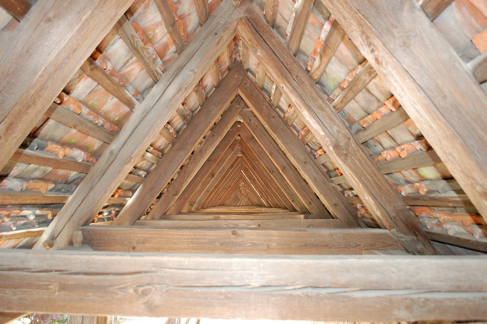
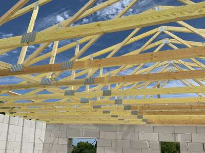
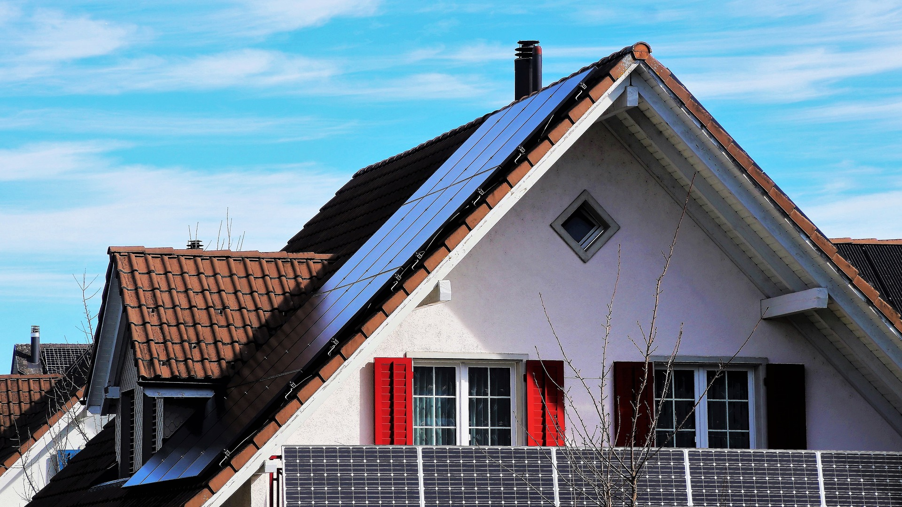

La qualité de notre travail, des matériaux utilisés, de la propreté du chantier ainsi que la
satisfaction de
nos clients sont nos priorités.

La toiture est une pièce maîtresse de la construction. Le choix de sa charpente et du type de couverture
se doit de répondre aux contraintes d'usage et d'harmonie architecturale.
Qu'elle soit traditionnelle ou "mécanique", que ses combles soient aménageables ou non, votre charpente
se devra d'être conçue et posée dans les règles de l'art.
La couverture quant à elle, constitue un élément majeur de votre construction. La qualité des matériaux
utilisés et le soin porté à sa réalisation contribueront à l'esthétique de votre projet.
La richesse de notre expérience en matière de toitures nous permettra de répondre pleinement à vos
attentes.


Quels sont les types de toiture?
Les toitures en pente (les plus courante) : connues pour leurs capacité à évacuer l’eau, ce qui réduit
donc les problèmes d’infiltration & d’étanchéité.
Ce type de toiture peut-être : mono pente à versant unique, à 2 pans et 4 pans, à coyaux ou en T ou en
L.
Les toitures plates : faites grâce à un support et non une charpente, permettant d'installer une
terrasse ou un espace vert sur le toit.
Les toitures arrondies (dôme / courbure simple / courbure double / tourelle) : peu connue, mais
deviennent de plus en plus apprécier de part son apparence esthétique et sa capacité
d'isolation.
Chaque toiture peuvent être réalisé avec divers matériaux, comme l'ardoise ou les tuiles par exemple.
Cependant, cela implique des compétences et coûts très variés selon les poses. Il est donc fortement
conseillé de recourir aux services d'une entreprise, certifié RGE (Reconnu Garant de l'Environnement)
pour l’installation de votre toiture.
Quel type de toit est le moins cher ?
Le Shingle est un matériau de couverture de toit conçu pour une toiture dotée d’une pente supérieure ou
égale à 20°, et constitué de deux couches de feuilles de feutre asphalté, entre lesquelles se trouve une
couche de fibres de verre.
Ayant un prix tournant autour de 10 à 20 €/m², cela fait de lui le moins cher de tous.
En effet, il présente de nombreuses qualités telles que :
La durée de vie : pouvant aller jusqu'à 15 ans dans les régions les plus chaudes
La facilité de pose : facilement découpable, mise en place facile et simple d'entretient
Son étanchéité : très bonne résistance à l'eau, aux intempéries et au feu
Variété de style : pouvant imiter certains matériaux comme les tuiles, le bois ou l'ardoise, il permet
d'avoir une toiture personnalisée.
Comment choisir sa toiture ?
Avant de choisir sa toiture, il faut se renseigner sur divers éléments :
En effet qu'il s'agisse d'un de construire une extension ou d’une maison neuve voir sa rénovation, le
choix du revêtement de toiture ne relève pas du libre-arbitre des propriétaires. Il fait tout d'abord se
renseigner sur les règles d’urbanisme en vigueur dans votre commune, inscrite dans le PLU (Plan Local
d’Urbanisme). Ce document impose l'utilisation de certains matériaux ou de revêtement précis pour
préserver l'architecture régionale. Par conséquent, il faudra que vos goûts personnels, correspondent
aux consignes du plan local d'urbanisme.
Pour les revêtements de toiture, il arrive parfois que le PLU n'impose pas de revêtement spécifique, par
conséquent le choix vous reviens, mais attention : votre choix devra prendre en compte les conditions
météorologiques de votre région. Étant le premier élément exposer aux intempéries, il doit être choisi
avec précaution, car certains résistent plus ou moins en fonction du climat dans votre zone
d'habitation.
La charpente étant l'élément qui supporte tout le revêtement de toiture, il faut prendre en compte sa
résistance au poids que va exercer le revêtement sur celle-ci. Il est donc important de faire des
calculs et d'envisager toutes les possibilités, ce qui vous permettra de faire un choix concernant votre
charpente et le revêtement que vous voulez appliquer dessus.